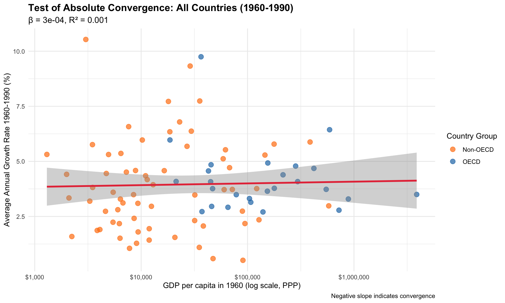
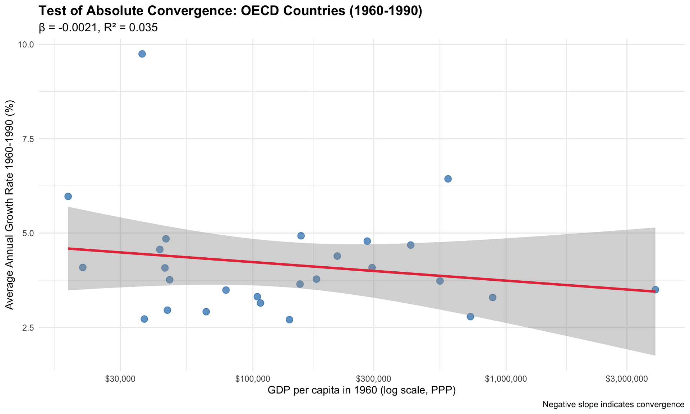

![]()
Packages used
library(haven)
library(dplyr)
library(ggplot2)
library(tidyr)
library(broom)
library(knitr)
library(countrycode)Empirical Evidence from the Penn World Tables
The Solow-Swan model makes one of the most striking predictions in development economics: absolute convergence. According to this model, poor countries should grow faster than rich countries because of diminishing returns to capital, leading all economies to eventually converge to the same level of income per capita.
This prediction emerges from two key assumptions:
The mathematical intuition is straightforward: if the marginal product of capital is higher in poor countries (due to lower capital stock), then investment should flow there, generating higher growth rates until all countries reach the same steady state.
But does this prediction hold in reality? In this session’s exercise, you were asked to test the absolute convergence hypothesis using real-world data from the Penn World Tables. Below you find a possible solution for this exercise.
We test absolute convergence by estimating the following regression:
\[\frac{1}{T} \ln\left(\frac{y_{i,t+T}}{y_{i,t}}\right) = \alpha + \beta \ln(y_{i,t}) + \epsilon_i\]
Where:
Absolute convergence occurs if \(\beta < 0\): countries with lower initial income grow faster.
We use data from the Penn World Tables 11.0, which provides internationally comparable GDP data using purchasing power parity (PPP) adjustments.
library(haven)
library(dplyr)
library(ggplot2)
library(tidyr)
library(broom)
library(knitr)
library(countrycode)We first import the PWT data, select the years of interest and define the list of OECD countries.
# Load Penn World Tables data
pwt_data <- read_dta("pwt110.dta") %>%
filter(year %in% c(1960, 1990, 2022), pop>1) %>%
select(c("countrycode", "country", "year", "cgdpo"))
# Create OECD country list for subset analysis
oecd_countries <- c(
"AUS", "AUT", "BEL", "CAN", "CHL", "CZE", "DNK", "EST",
"FIN", "FRA", "DEU", "GRC", "HUN", "ISL", "IRL", "ISR",
"ITA", "JPN", "KOR", "LVA", "LTU", "LUX", "MEX", "NLD",
"NZL", "NOR", "POL", "PRT", "SVK", "SVN", "ESP", "SWE",
"CHE", "TUR", "GBR", "USA")
# Display sample of data
kable(head(pwt_data, 5), caption = "Sample of Penn World Tables Data")| countrycode | country | year | cgdpo |
|---|---|---|---|
| AGO | Angola | 1990 | 41716.39 |
| AGO | Angola | 2022 | 225903.91 |
| ALB | Albania | 1990 | 12227.74 |
| ALB | Albania | 2022 | 43686.69 |
| ARE | United Arab Emirates | 1990 | 300576.81 |
Then we create the data set used for the estimation by transforming it into the right shape, filter for missing observations and calculating the necessary variables (such as annual growth rates, initial GDP)
# Create convergence dataset
convergence_data <- pwt_data %>%
pivot_wider(
names_from = year,
values_from = cgdpo,
names_prefix = "gdp_"
) %>%
filter(
!is.na(gdp_1960),
!is.na(gdp_1990),
!is.na(gdp_2022)
) %>%
mutate(
# Calculate annual growth rates (in decimal form)
growth_60_90 = (log(gdp_1990) - log(gdp_1960)) / 30,
growth_90_22 = (log(gdp_2022) - log(gdp_1990)) / 32,
growth_60_22 = (log(gdp_2022) - log(gdp_1960)) / 62,
# Initial GDP (log)
ln_gdp_1960 = log(gdp_1960),
ln_gdp_1990 = log(gdp_1990),
# Create OECD indicator
oecd = ifelse(countrycode %in% oecd_countries, "OECD", "Non-OECD")
)
# Display summary statistics
kable(convergence_data %>%
select(
country, gdp_1960, gdp_1990,
gdp_2022, growth_60_90, growth_90_22) %>%
head(10),
digits = 3,
caption = "Sample Countries: GDP Levels and Growth Rates")| country | gdp_1960 | gdp_1990 | gdp_2022 | growth_60_90 | growth_90_22 |
|---|---|---|---|---|---|
| Argentina | 71913.469 | 219936.453 | 1260669.75 | 0.037 | 0.055 |
| Australia | 178392.688 | 554314.625 | 1703845.00 | 0.038 | 0.035 |
| Austria | 78335.203 | 223089.672 | 581060.31 | 0.035 | 0.030 |
| Burundi | 2097.166 | 5712.411 | 13065.02 | 0.033 | 0.026 |
| Belgium | 104181.156 | 281506.406 | 665497.25 | 0.033 | 0.027 |
| Benin | 4094.783 | 7253.897 | 46482.14 | 0.019 | 0.058 |
| Burkina Faso | 5438.738 | 10643.562 | 52374.13 | 0.022 | 0.050 |
| Bangladesh | 94496.164 | 181639.328 | 1327167.88 | 0.022 | 0.062 |
| Bolivia (Plurinational State of) | 6382.087 | 17126.891 | 114655.68 | 0.033 | 0.059 |
| Brazil | 177550.828 | 1006764.188 | 3826745.25 | 0.058 | 0.042 |
We then test convergence for the different time horizons and country groups.
Table 1 summarizes the result of estimating the convergence regression for 1960-1990 for all countries (see also Figure 1).
model_60_90_all <- lm(growth_60_90 ~ ln_gdp_1960, data = convergence_data)
# Extract results for the summary table below
results_60_90_all <- tidy(model_60_90_all)
r_squared_60_90_all <- glance(model_60_90_all)$r.squared
# Display results
kable(results_60_90_all, digits = 4,
caption = "Convergence Regression Results: All Countries (1960-1990)")| term | estimate | std.error | statistic | p.value |
|---|---|---|---|---|
| (Intercept) | 0.0361 | 0.0129 | 2.7999 | 0.0063 |
| ln_gdp_1960 | 0.0003 | 0.0012 | 0.2773 | 0.7822 |
all_6090_plot <- ggplot(convergence_data, aes(x = exp(ln_gdp_1960), y = growth_60_90 * 100)) +
geom_point(aes(color = oecd), alpha = 0.7, size = 3) +
geom_smooth(method = "lm", se = TRUE, color = "#E63946", linewidth = 1.2) +
scale_x_log10(labels = scales::dollar_format()) +
scale_color_manual(values = c("OECD" = "#1f77b4", "Non-OECD" = "#ff7f0e")) +
labs(
title = "Test of Absolute Convergence: All Countries (1960-1990)",
subtitle = paste0("β = ", round(results_60_90_all$estimate[2], 4),
", R² = ", round(r_squared_60_90_all, 3)),
x = "GDP per capita in 1960 (log scale, PPP)",
y = "Average Annual Growth Rate 1960-1990 (%)",
color = "Country Group",
caption = "Negative slope indicates convergence"
) +
theme_minimal() +
theme(
plot.title = element_text(size = 14, face = "bold"),
plot.subtitle = element_text(size = 12)
)
all_6090_plot
If we restrict ourselves to the subset of OECD countries we get the result summarized in Table 2 (see also Figure 2):
# Filter for OECD countries
convergence_oecd <- convergence_data %>% filter(oecd == "OECD")
# Convergence regression for OECD countries
model_60_90_oecd <- lm(growth_60_90 ~ ln_gdp_1960, data = convergence_oecd)
# Extract results
results_60_90_oecd <- tidy(model_60_90_oecd)
r_squared_60_90_oecd <- glance(model_60_90_oecd)$r.squared
# Display results
kable(results_60_90_oecd, digits = 4,
caption = "Convergence Regression Results: OECD Countries (1960-1990)")| term | estimate | std.error | statistic | p.value |
|---|---|---|---|---|
| (Intercept) | 0.0669 | 0.0272 | 2.4626 | 0.0214 |
| ln_gdp_1960 | -0.0021 | 0.0023 | -0.9337 | 0.3597 |
oecd_6090_plot <- ggplot(
data = convergence_oecd,
mapping = aes(
x = exp(ln_gdp_1960),
y = growth_60_90 * 100)
) +
geom_point(color = "#1f77b4", alpha = 0.7, size = 3) +
geom_smooth(method = "lm", se = TRUE, color = "#E63946", linewidth = 1.2) +
scale_x_log10(labels = scales::dollar_format()) +
labs(
title = "Test of Absolute Convergence: OECD Countries (1960-1990)",
subtitle = paste0("β = ", round(results_60_90_oecd$estimate[2], 4),
", R² = ", round(r_squared_60_90_oecd, 3)),
x = "GDP per capita in 1960 (log scale, PPP)",
y = "Average Annual Growth Rate 1960-1990 (%)",
caption = "Negative slope indicates convergence"
) +
theme_minimal() +
theme(
plot.title = element_text(size = 14, face = "bold"),
plot.subtitle = element_text(size = 12)
)
oecd_6090_plot
Below you find the code for the other cases:
# Convergence regression for 1990-2022 (all countries)
model_90_22_all <- lm(growth_90_22 ~ ln_gdp_1990, data = convergence_data)
# Extract results
results_90_22_all <- tidy(model_90_22_all)
r_squared_90_22_all <- glance(model_90_22_all)$r.squared
# Display results
# kable(results_90_22_all, digits = 4,
# caption = "Convergence Regression Results: All Countries (1990-2022)")all_9022 <- ggplot(
data = convergence_data,
mapping = aes(x = exp(ln_gdp_1990), y = growth_90_22 * 100)
) +
geom_point(aes(color = oecd), alpha = 0.7, size = 3) +
geom_smooth(method = "lm", se = TRUE, color = "#E63946", linewidth = 1.2) +
scale_x_log10(labels = scales::dollar_format()) +
scale_color_manual(values = c("OECD" = "#1f77b4", "Non-OECD" = "#ff7f0e")) +
labs(
title = "Test of Absolute Convergence: All Countries (1990-2022)",
subtitle = paste0("β = ", round(results_90_22_all$estimate[2], 4),
", R² = ", round(r_squared_90_22_all, 3)),
x = "GDP per capita in 1990 (log scale, PPP)",
y = "Average Annual Growth Rate 1990-2022 (%)",
color = "Country Group",
caption = "Negative slope indicates convergence"
) +
theme_minimal() +
theme(
plot.title = element_text(size = 14, face = "bold"),
plot.subtitle = element_text(size = 12)
)# Convergence regression for OECD countries
model_90_22_oecd <- lm(growth_90_22 ~ ln_gdp_1990, data = convergence_oecd)
# Extract results
results_90_22_oecd <- tidy(model_90_22_oecd)
r_squared_90_22_oecd <- glance(model_90_22_oecd)$r.squared
# Display results
# kable(results_90_22_oecd, digits = 4,
# caption = "Convergence Regression Results: OECD Countries (1990-2022)")oecd9022_plot <- ggplot(
data = convergence_oecd,
mapping = aes(x = exp(ln_gdp_1990), y = growth_90_22 * 100)
) +
geom_point(color = "#1f77b4", alpha = 0.7, size = 3) +
geom_smooth(method = "lm", se = TRUE, color = "#E63946", linewidth = 1.2) +
scale_x_log10(labels = scales::dollar_format()) +
labs(
title = "Test of Absolute Convergence: OECD Countries (1990-2022)",
subtitle = paste0("β = ", round(results_90_22_oecd$estimate[2], 4),
", R² = ", round(r_squared_90_22_oecd, 3)),
x = "GDP per capita in 1990 (log scale, PPP)",
y = "Average Annual Growth Rate 1990-2022 (%)",
caption = "Negative slope indicates convergence"
) +
theme_minimal() +
theme(
plot.title = element_text(size = 14, face = "bold"),
plot.subtitle = element_text(size = 12)
)Table 3 provides a summary of our convergence test results.
summary_results <- data.frame(
Period = c("1960-1990", "1960-1990", "1990-2022", "1990-2022"),
Sample = c("All Countries", "OECD Only", "All Countries", "OECD Only"),
Beta = c(
round(results_60_90_all$estimate[2], 4),
round(results_60_90_oecd$estimate[2], 4),
round(results_90_22_all$estimate[2], 4),
round(results_90_22_oecd$estimate[2], 4)
),
P_value = c(
round(results_60_90_all$p.value[2], 4),
round(results_60_90_oecd$p.value[2], 4),
round(results_90_22_all$p.value[2], 4),
round(results_90_22_oecd$p.value[2], 4)
),
R_squared = c(
round(r_squared_60_90_all, 3),
round(r_squared_60_90_oecd, 3),
round(r_squared_90_22_all, 3),
round(r_squared_90_22_oecd, 3)
),
Convergence = c(
ifelse(
results_60_90_all$estimate[2] < 0 & results_60_90_all$p.value[2] < 0.05,
"Yes", "No"),
ifelse(
results_60_90_oecd$estimate[2] < 0 & results_60_90_oecd$p.value[2] < 0.05,
"Yes", "No"),
ifelse(
results_90_22_all$estimate[2] < 0 & results_90_22_all$p.value[2] < 0.05,
"Yes", "No"),
ifelse(
results_90_22_oecd$estimate[2] < 0 & results_90_22_oecd$p.value[2] < 0.05,
"Yes", "No")
)
)
kable(summary_results,
caption = "Summary of Convergence Test Results",
col.names = c("Period", "Sample", "β (Convergence Parameter)",
"P-value", "R²", "Significant Convergence?"))| Period | Sample | β (Convergence Parameter) | P-value | R² | Significant Convergence? |
|---|---|---|---|---|---|
| 1960-1990 | All Countries | 0.0003 | 0.7822 | 0.001 | No |
| 1960-1990 | OECD Only | -0.0021 | 0.3597 | 0.035 | No |
| 1990-2022 | All Countries | -0.0027 | 0.0581 | 0.040 | No |
| 1990-2022 | OECD Only | -0.0050 | 0.0078 | 0.260 | Yes |
Solow-Swan Prediction:
Our Results:
Why is it that absolute convergence is not happening as predicted by Solow-Swan? The great thing about such models is that we can systematically think about which of its assumptions might not hold:
The weak evidence for absolute convergence has led economists to focus on conditional convergence - the idea that countries converge to their own steady states, which may differ based on:
As you see, this addresses some of the possible explanations above. Other economists, especially those working in Marxist and Dependency Theory traditions would be even more skeptical, and argue for a systematic relationship between development and underdevelopment, suggesting that studying conditional convergence is not a fruitful endeavor either.
These findings have important implications for development policy:
Your empirical test of the Solow model’s convergence prediction illustrates the complexity of real-world development. While you found some evidence of convergence among similar countries (like OECD members), the prediction of universal convergence does not hold for the global economy.
This doesn’t mean the Solow model is wrong - rather, it highlights that the assumptions of identical technology, institutions, and preferences across countries are often violated in reality. The model remains valuable for understanding growth mechanics, but must be complemented with theories that account for institutional, technological, and structural differences between countries.
Understanding these limitations is crucial for development economists and policymakers who seek to design effective strategies for promoting economic growth and reducing global inequality.